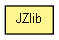

org.jboss.netty.util.internal.jzlib
类 JZlib
java.lang.Object
 org.jboss.netty.util.internal.jzlib.JZlib
org.jboss.netty.util.internal.jzlib.JZlib
public final class JZlib
- extends java.lang.Object

| 从类 java.lang.Object 继承的方法 |
equals, getClass, hashCode, notify, notifyAll, toString, wait, wait, wait |
W_NONE
public static final java.lang.Enum<?> W_NONE
W_ZLIB
public static final java.lang.Enum<?> W_ZLIB
W_GZIP
public static final java.lang.Enum<?> W_GZIP
Z_NO_COMPRESSION
public static final int Z_NO_COMPRESSION
- 另请参见：
- 常量字段值
Z_BEST_SPEED
public static final int Z_BEST_SPEED
- 另请参见：
- 常量字段值
Z_BEST_COMPRESSION
public static final int Z_BEST_COMPRESSION
- 另请参见：
- 常量字段值
Z_DEFAULT_COMPRESSION
public static final int Z_DEFAULT_COMPRESSION
- 另请参见：
- 常量字段值
Z_FILTERED
public static final int Z_FILTERED
- 另请参见：
- 常量字段值
Z_HUFFMAN_ONLY
public static final int Z_HUFFMAN_ONLY
- 另请参见：
- 常量字段值
Z_DEFAULT_STRATEGY
public static final int Z_DEFAULT_STRATEGY
- 另请参见：
- 常量字段值
Z_NO_FLUSH
public static final int Z_NO_FLUSH
- 另请参见：
- 常量字段值
Z_PARTIAL_FLUSH
public static final int Z_PARTIAL_FLUSH
- 另请参见：
- 常量字段值
Z_SYNC_FLUSH
public static final int Z_SYNC_FLUSH
- 另请参见：
- 常量字段值
Z_FULL_FLUSH
public static final int Z_FULL_FLUSH
- 另请参见：
- 常量字段值
Z_FINISH
public static final int Z_FINISH
- 另请参见：
- 常量字段值
Z_OK
public static final int Z_OK
- 另请参见：
- 常量字段值
Z_STREAM_END
public static final int Z_STREAM_END
- 另请参见：
- 常量字段值
Z_NEED_DICT
public static final int Z_NEED_DICT
- 另请参见：
- 常量字段值
Z_ERRNO
public static final int Z_ERRNO
- 另请参见：
- 常量字段值
Z_STREAM_ERROR
public static final int Z_STREAM_ERROR
- 另请参见：
- 常量字段值
Z_DATA_ERROR
public static final int Z_DATA_ERROR
- 另请参见：
- 常量字段值
Z_MEM_ERROR
public static final int Z_MEM_ERROR
- 另请参见：
- 常量字段值
Z_BUF_ERROR
public static final int Z_BUF_ERROR
- 另请参见：
- 常量字段值
Z_VERSION_ERROR
public static final int Z_VERSION_ERROR
- 另请参见：
- 常量字段值
JZlib
public JZlib()